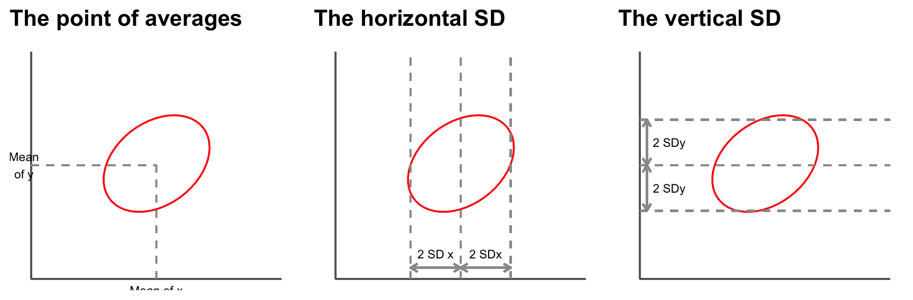
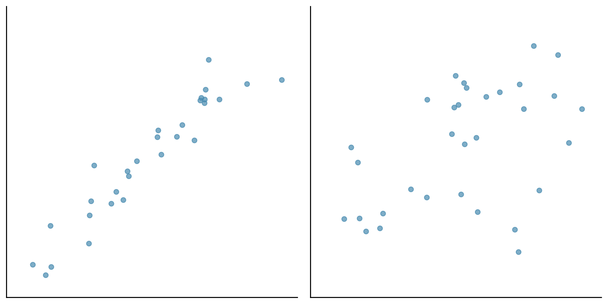
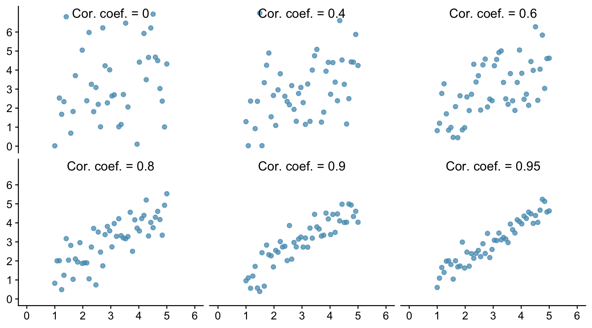
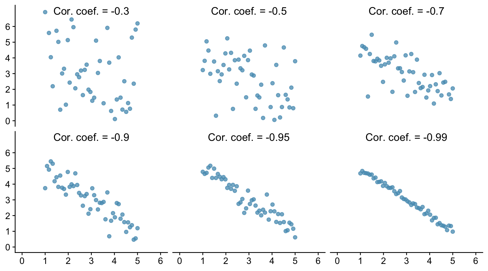
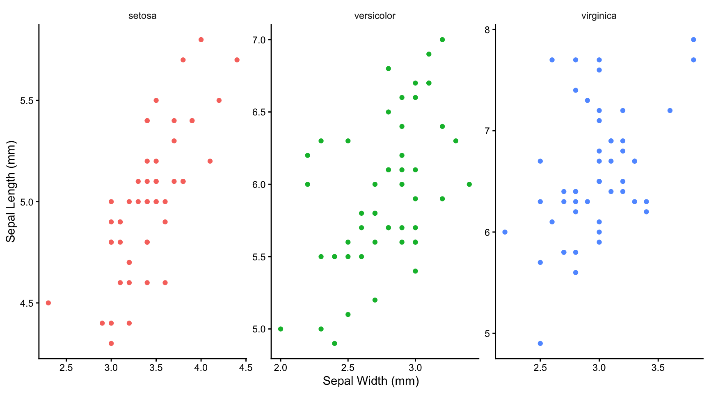
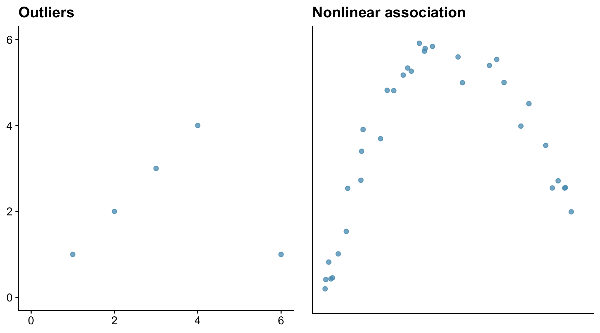
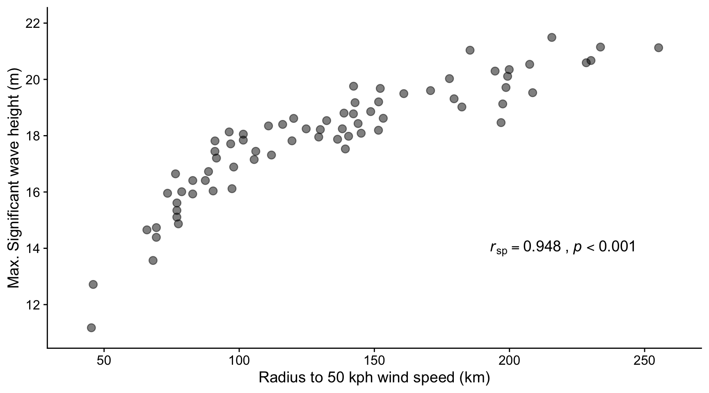
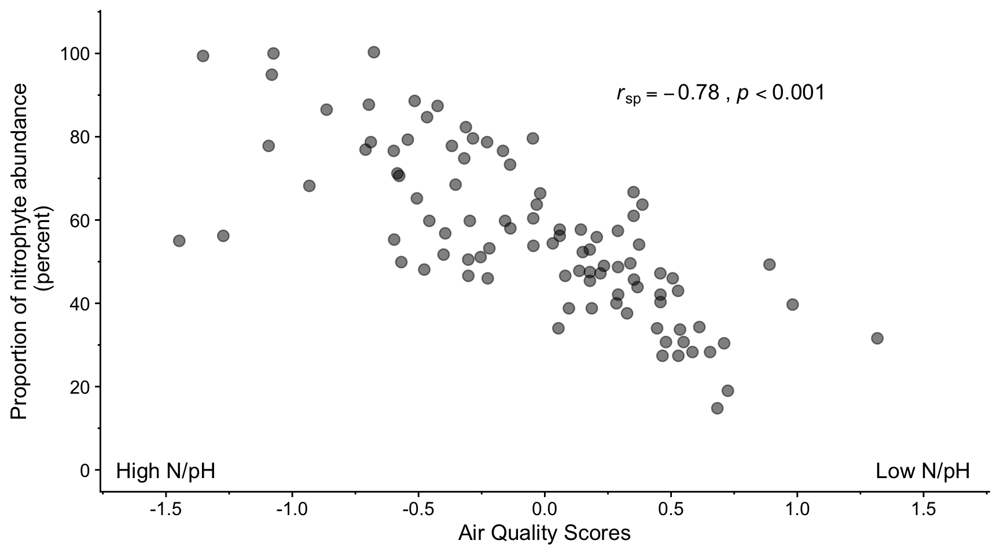
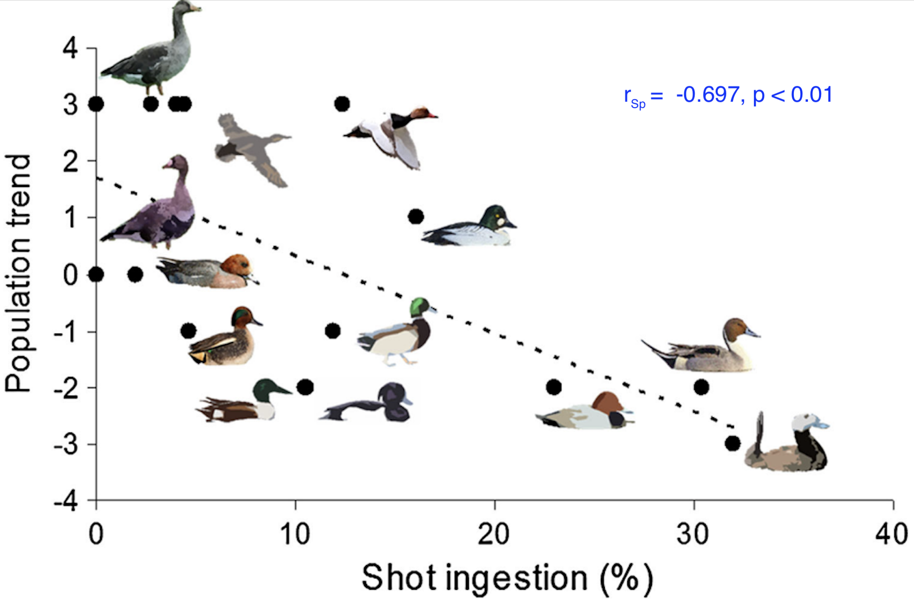
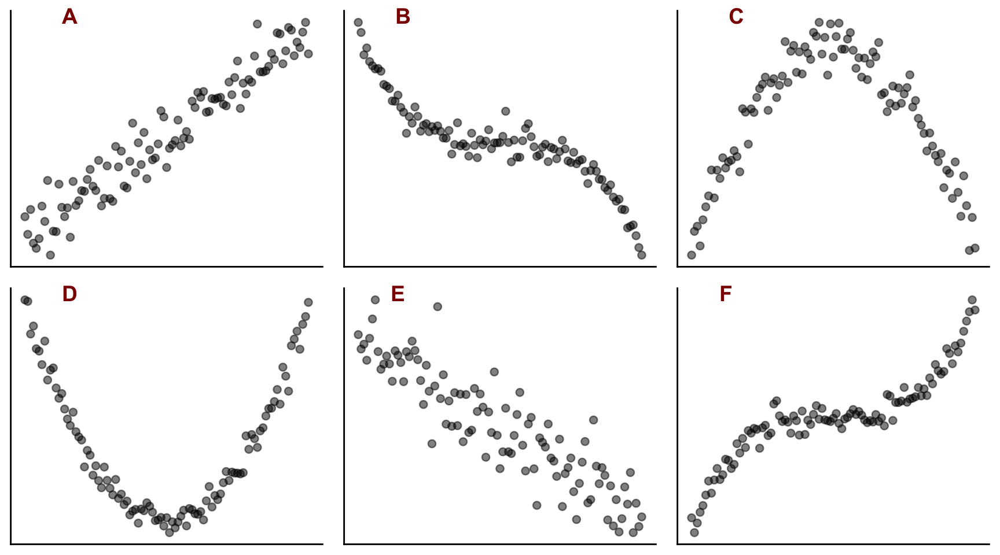

9 Correlation
This guide to correlation draws heavily on the very helpful chapter in Statistics, by David Freedman, Robert Pisani, Roger Purves and Ani Adhikari, 2nd ed., Norton.
9.1 Correlation
The notable statistician Karl Pearson (1857 - 1936) carried out a study to investigate the resemblance between children and their parents. As part of the study, Pearson measured the heights of 1078 parents and of their children at maturity. The heights of the children are plotted against the heights of the parents in the plots below, where we distinguish between father-son and mother-daughter pairs.
The taller a father, the taller his sons tend to be. It is the same with mothers and daughters.
There is a positive association between a father’s height and the height of his sons.
But there is a lot variation - the association is weak.
If you know the height of a father, how much does that tell you about the height of his sons?
Consider fathers who are about about 67 inches tall, and look at the wide variation in the heights of their sons - - all the points between the two vertical dotted lines. The same is true for the daughters of mother who are about 63 inches tall.
If there is a strong association between two variables, then knowing one helps a lot in predicting the other. But when there is a weak association, information about one variable does not help much in guessing the other. When there is no association, it does not help at all.
9.1.1 The correlation coefficient
Suppose we are looking at the relationship between two variables and have already plotted the scatter plot. The graph looks like a cloud of points.
How can we summarise it numerically?
The first thing we can do is to mark a point that shows the average of the x-values and the average of the y-values. This is the point of averages. It marks the centre of the cloud.
The next step is to measure the width of the cloud from side to side, in both the x and the y directions. This can be done using the standard deviations (SD) of the x and y values. Remember that if both x and y are normally distributed, then 95% of the data will lie within about 2 (1.96 if we want to be pernickety) standard deviations of the mean, in each direction.

So far, our summary statistics are:
- mean of the x values, SD of the x values.
- mean of the y values, SD of the y values.
These statistics tell us where the centre of the cloud is and how far spread out it is both vertically and horizontally, but they do not tell the whole story.
Consider the following two sets of data plotted below. Both have the same centre and the same spread.

However the points in the first cloud are tightly clustered around a line - there is a strong linear association between the two variables. In the second cloud, the clustering is much looser. The strength of the association is different in the two diagrams. To measure the association, one more summary statistic is needed - the correlation coefficient.
This coefficient is usually abbreviated as r, for no good reason.
The correlation coefficient is a measure of linear association or clustering around a line. The relationship between two variables can be summarized by:
- the average of the x-values, the SD of the x-values.
- the average of the y-values, the SD of the y-values.
- the correlation coefficient r
9.1.2 Different values of r.
Let us see how this looks graphically. In the Figure below we show six scatter plots for hypothetical data. In all six pictures the average is 3 and the standard deviation is 1 for both x and y. The correlation coefficient is printed in each case.

The one top left shows a correlation of 0 and the cloud is completely formless. As x increases, y shows no tendency to increase or decrease. It just straggles around.
The next diagram has r = 0.4 and a linear pattern is just starting to emerge. The next has r = 0.6 with a stronger linear pattern, and so on. The closer r is to 1 the stronger is the linear association and the more tightly clustered are the points around a line.
A correlation of 1, which does not appear in the Figure is often referred to as a perfect correlation. It means that all the points lie exactly on a line so there is a perfect linear correlation between the two variables. Correlation coefficients are always between -1 and 1.
The correlation between the heights of identical twins is around 0.95. A scatter diagram for the heights of twins would thus look like the bottom right diagram in the Figure. We see that even with a coefficient this big there is a still a fair degree of scatter. The heights of identical twins are far from being equal all the time.
Real data in the life sciences never shows perfect correlation and rarely does it even show strong correlation. It is more common for it to look like Pearson’s father-son data, with weak associations and r values in the range 0.3 to 0.7. This is even more true for data from the social sciences which concern human behaviour.
We can also have negative associations between variables. For example women with more education tend to have fewer children. Animals with higher body weight tend to have lower metabolic rates. As one variable increases, the other decreases. When there is negative association, the correlation coefficient has a negative sign.
Below we show six examples of negative correlation. As in the previous figure, all the data sets have a mean of 3 and a standard deviation of 1.

Correlations are always between -1 and 1, but can take any value in between. A positive correlation means that the cloud slopes up: as one variable increases, so does the other. A negative correlation means that the cloud slopes down. As one variable increases, the other decreases.
9.1.3 Using R to find the correlation coefficient.
First, let us try to find the correlation between two sets of data where we know what the correlation coefficient is, because we created the data ourselves. We will take the x and y data used above for which the correlation coefficient was fixed to be 0.8
cor.test(x,y,method="pearson")
Pearson's product-moment correlation
data: x and y
t = 9.3642, df = 48, p-value = 2.079e-12
alternative hypothesis: true correlation is not equal to 0
95 percent confidence interval:
0.677047 0.884358
sample estimates:
cor
0.8038967 There are different ways to calculate the correlation coefficient. Which of them is appropriate depends mainly on the type of data, and if they are numeric, whether they are normally distributed. If they are, then we use the Pearson method. If they are not, for example because they are ordinal data, then we use the Spearman’s Rank method and write method=“spearman” instead. In this case we can relax the requirement that there is a linear association between the data sets, but there does still need to be a monotonic relationship.
It is important to be able to interpret and report the output.
First, understand that R is carrying out a test, the null hypothesis of which is that there is no correlation between the values of x and the values of y among the populations from which the x and y data were drawn, so that the correlation coefficient between x and y within those populations is zero. It then reports a p-value: how likely it is that you would have got the data you got for this sample of data if that null hypothesis were true. As with most tests, to do this it uses the data to calculate a so-called test-statistic. How it does this need not concern us here. The details will differ from test to test, and the name given will differ. Here it is called t. It also reports the number of independent pieces of information used to calculate that statistic. This is called the degrees of freedom, here denoted df. This usually (but not necessarily) has a value that is 1,2 or 3 less than the number of data points.
Then it reports the p-value. A tiny (close to zero) value here means that it thinks it very unlikely that the samples would be as they are if the x and y variables were not correlated in the populations from which the samples were drawn. A high (by which we usually mean greater than 0.05) value means that there is a reasonable chance that the actual non-zero correlation coefficient could have been found between x and y in the samples, even though those values were not correlated in the wider populations from which the samples were drawn. In that case we would have found no evidence that the x and y data within the population were correlated. This doesn’t mean that they aren’t, just that we have insufficient evidence to reject the null hypothesis that they are not.
The p-value reported here is 4.3e-12. That is R’s way of saying what in standard form would be written 4.3 x 10-12. This is a really tiny value. It is 0.0000000000043, which is a very inconvenient way to write such a small number. Hence R’s way of doing it or the standard form way of doing it. In the context of a statistical test and when p is is that small we don’t care about its exact value, we simply note that it is very, very small. We thus can confidently reject the null hypothesis and assert that the data provide evidence that x and y are correlated, in this case positively.
Further, it reports the actual correlation coefficient. Here it finds r = 0.797, which we happen to know to be correct because we created this data set ourselves, and a 95% confidence interval for the coefficient. The precise meaning of the confidence interval is subtle, but it is a kind of error bar for the correlation coefficient r. It means that if we drew sample after sample from the population and calculated the confidence interval for r for each sample, then 95% of the time that interval would capture the true value of r. Thus, you can reasonably think of the confidence interval as being the range of values within which the true population correlation coefficient plausibly lies, given the value that was found for the sample.
If the p-value is small enough that we reject the null-hypothesis, then this confidence interval should not encompass zero. Why? Because any value inside the confidence interval is a plausible value for the population correlation coefficient andif we are going to reject the null hypothesis, then zero should not be a plausible value for the population correlation coefficient, given the data.
If the p-value is large enough that we do not reject the null hypothesis then this confidence interval will encompass zero. Why? Becuase if the confidence interval encompasses zero, then zero is a plausible value for the correlation coefficient and so we should not reject the null.
Here, the confidence interval is from 0.67 to 0.88. This does not encompass zero. In fact it is far from zero, so is consistent with our finding a really small p-value. On both groundss, we reject the null.
To report the result of this test we would say something like:
We find evidence for a strong positive correlation between x and y (Pearson r =0.80, t=9.1, df=48, p<0.001)
Note that when the p-value is much less than 0.05 as it is here we do not normally report its exact value, but simply write p<0.01, or p<0.001, and so on. The point is that these ways of reporting it tell the reader that p is way less than 0.05. This is all they need to know to see that we can confidently reject the null hypothesis.
9.1.4 Correlations for real data
Let us look at the Iris data set that is built into R. It contains values for the Sepal Width, Sepal Length, Petal Width and Petal Length for samples of 50 plants from each of three species of Iris, setosa, versicolor and virginica. Here are the first few rows:
Sepal.Length Sepal.Width Petal.Length Petal.Width Species
1 5.1 3.5 1.4 0.2 setosa
2 4.9 3.0 1.4 0.2 setosa
3 4.7 3.2 1.3 0.2 setosa
4 4.6 3.1 1.5 0.2 setosa
5 5.0 3.6 1.4 0.2 setosa
6 5.4 3.9 1.7 0.4 setosaWe will look to see if the data allow us to reject the idea that sepal width and sepal length are not correlated within the wider populations of each of these species:
First, let’s plot the data
iris |>
ggplot(aes(x=Sepal.Width,y=Sepal.Length,colour=Species)) +
geom_point() +
labs(x="Sepal Width (mm)",
y="Sepal Length (mm)") +
facet_wrap(~Species,nrow=1,scales="free") +
theme_classic() +
theme(legend.position="none") +
theme(strip.background=element_blank())
9.1.4.1 What we can tell from plotting the data
Having seen the plots, do you think it plausible that there is a linear relationship between sepal width and length? Only in this case can you use a Pearson correlation test (see below). If not linear, do you think there is at least a monotonic relationship between petal width and length (ie no peaks or troughs)? That, at least, would enable you to use a Spearman’s Rank correlation test. If neither are true, then you can’t use either test.
9.1.4.2 Test for normality
It does look as though there is a plausibly linear relationship between sepal width and length, so we might be able to use the Pearson method for calculating correlation coefficient. This is the ‘parametric’ method that is more powerful than the ‘non-parametric’ alternative, the Spearman’s rank method.
In principle, however, this method requires that each group of the data be approximately normally distributed around its repective mean (that is what the word parametric is getting at), so we ought to test for this. We can do this either graphically or using a normality test such as the Shapiro wilk test. Let us do the latter here:
# A tibble: 3 × 3
Species Sepal.Length_p.val Sepal.Width_p.val
<fct> <dbl> <dbl>
1 setosa 0.460 0.272
2 versicolor 0.465 0.338
3 virginica 0.258 0.181All the p-values for this test are comfortably greater than 0.05 so we can reasonably presume that our data are drawn from normally distributed populations. This, plus the plausibly linear realtionships we have seen in the graphs means that can go ahead and use the Pearson method to calculate the correlation coefficient between sepal length and width for each species!
9.1.4.3 Calculate the correlation coefficients
Looking at each graph, it appears that there is a positive correlation for each species, but that this is weaker for versicolar and virginica than it is for setosa. Knowing the sepal width for that species gives you a much better idea of the sepal length, and vice-versa, than is true for the other two species.
Let us find out:
iris |>
group_by(Species) |>
summarise(r=cor.test(Sepal.Width,Sepal.Length)$estimate,
lower.bound95=cor.test(Sepal.Width,Sepal.Length)$conf.int[1],
upper.bound95=cor.test(Sepal.Width,Sepal.Length)$conf.int[2],
"p value"=cor.test(Sepal.Width,Sepal.Length)$p.value) |>
kbl(digits=3) |>
kable_styling(full_width=0.7)| Species | r | lower.bound95 | upper.bound95 | p value |
|---|---|---|---|---|
| setosa | 0.743 | 0.585 | 0.846 | 0.000 |
| versicolor | 0.526 | 0.290 | 0.702 | 0.000 |
| virginica | 0.457 | 0.205 | 0.653 | 0.001 |
The table gives the estimated value for the Pearson correlation coefficient in each case, the lower and upper bound of the 95% confidence interval for that coefficient and the p-value.
Do these output provide evidence for a correlation between sepal length and sepal width in each case?
9.1.5 The problem of missing variables
Suppose in the above analysis we had not distinguished between the three species. If we had plotted the speal length and width data we would have seen this:
iris |>
ggplot(aes(x=Sepal.Width,y=Sepal.Length)) +
geom_point() +
labs(x="Sepal Width (mm)",
y="Sepal Length (mm)") +
theme_classic() +
theme(legend.position="none") +
theme(strip.background=element_blank())
This looks like a weak negative correlation, as is confirmed by calculating the Spearman’s (in this case) rank correlation coefficient.
The message here is that failure to spot importnat ‘missing’ variables, in the case species, can lead to grossly misleading ideas as to whether two variables are correlated, and if so, how.
9.1.6 The correlation coefficient measures the degree of linear association.
9.1.6.1 Pearson correlation coefficient
Sometimes the Pearson correlation coefficient r is a poor measure of the degree of association within a data set. Outliers and non-linearity are two problem cases.
Consider first a data set where there is a very strong association between variables, but where the data sset contains an outlier, and then a data set where there is a strong but non-linear association between variables. Here we mean by ‘strong’ that knowing the value of one variable gives you a very good idea of the value of the other.

The outlier in the left-hand figure above brings the correlation coefficient down to 0.08, which is close to zero. The correlation coefficient in the right-hand figure is similarly small at -0.061, despite that there is a strong association between the x and y data. The reason is that the association is non-linear.
9.1.6.2 Spearman’s rank correlation coefficient rSp
The Spearman’s rank correlation coefficient is a valid measure of the association between two variables providing their relationship is monotonic - that is, continuously rising or flat, or continuously falling or flat. Linear relationships are monotonic, so the Spearman’s rank correlation coefficient is always a useful (if not necessarily the most powerful - Pearson would trump it if it could be used) measure of association for such cases, but it will still be valid when the relationship is monotonic but non-linear, whereas the Pearson correlation coefficient would not be.
Spearman’s rank correlation coefficient rSp can also be be used for ordinal data, whereas Pearson’s r coefficient cannot be. This makes it very useful in much of ecology, animal behaviour and environmental studies where ordinal scales are commonly used.
9.1.7 When is it appropriate to calculate a correlation coefficient?
So, to sum up, we note that the Pearson correlation coefficient is a measure of linear association, not of association in general. At least, this is true if you are calculating the Pearson correlation coefficient. If your data are not suitable for that and you decide to calculate the Spearman’s Rank correlation coefficient, then the condition is relaxed somewhat: there might be but there no longer needs to be a linear relationship between the two variables, but there must be a monotonic one. That means that, as one variable increases, the other should either increase or remain constant, or decrease or remain constant - that is, there should be no peaks or troughs in the data.
9.1.8 Association is not causation
A very important and often-repeated point to note is that correlation measures association. But association is not the same as causation.
See Spurious Correlations for some amusing examples.
9.2 Examples
9.2.1 Cyclones
Cyclones are areas of low atmospheric pressure around which steep gradients in air pressure can cause strong winds to develop, which in turn may create large waves if the cylone is over the oceans. Depending on where they occur, these storms are variously also known as hurricanes and typhoons. Here we consider whether the peak wind speeds are associated with the depth of the low pressure at the eye of the storm, and whether the peak wave sizes are associated with how wide the storm is. If the answer to either of these questions is yes, then an outcome of practical importance - wind speed, wave height - can be predicted at least in part by a variable that can be measured easily - pressure, distance.
9.2.1.1 South West Indian Ocean intense tropical cyclones 1973 - 2024
Pressure gradients cause winds so it is reasoable to ask whether there a correlation between the peak wind speed and minimum pressure at the eye of cyclones. Here we look at data for for intense tropical cyclones in the south west Indian Ocean over the period 1973-2024. The data are taken (scraped using the R package rvest!) from: https://en.wikipedia.org/wiki/List_of_South-West_Indian_Ocean_intense_tropical_cyclones . The original data sources are available on that site.

In this figure we see that there is a weak but significant negative correlation between the peak recorded wind speed and the minimum recorded pressure at the centre of intense tropical cyclones that occurred in the south west Indian Ocean between 1973 and 2024. Neither wind speed nor pressure were normally distributed, so the Spearman’s rank correlation coefficient rSp has been calculated, and not the Pearson r coefficient.
9.2.1.2 Significant wave height vs size of cyclone
Here we look at results displayed in Figure 3f of
Oh, Y. et al. (2023) ‘Optimal tropical cyclone size parameter for determining storm-induced maximum significant wave height’, Frontiers in Marine Science, 10, p. 1134579. Available at: https://doi.org/10.3389/fmars.2023.1134579.
The authors seek to determine whether there is an association between the size of a cylone, measured by the ‘R50’ distance measured outward from the storm centre to where the wind speeds have subsided to 50 kph, and the maximum ‘significant wave height’ of the swell created by the storm. Significant wave height is a widely used measure that is the average height of the heighest 1/3 of the waves, these being the ones that impact most on practical matters like the fuel consumption of ships, the erosion of shores, and so on.

The plot shows that there is a monotonically rising relationship between the R50 radius of the cyclones included in the study and the maximum significant wave height of swell created by them. The relationship is not linear however, so the only appropriate measure of correlation coefficient is the Spearman’s rank, which gives \(r_{sp} = 0.948, p<0.001\), indicating a very strong positive association between the size of a cyclone and the height of the waves it creates.
Why do you think this relationship flattens off for larger storm sizes?
9.2.2 Lichen abundance
Jovan, S. (2008). Lichen Bioindication of Biodiversity, Air Quality, and Climate: Baseline Results From Monitoring in Washington, Oregon, and California. http://gis.nacse.org/lichenair/doc/Jovan2008.pdf
In this paper the authors investigate the utility of using lichen as bioindicators of air quality. is there an association between air quality and the abundance of this or that species of lichen?

We note that the relationship between air quality score and proportion of nitrophyte abundance is plausibly linear.
There is a strong negative correlation (rSp=-0.78, p<0.001) between air quality score and proportion of nitrophyte lichen. This suggests that this proportion can be used as a bioindicator of air quality.
A Spearman’s rank correlation coefficient was calculated in this case rather than a Pearson correlation coefficient, despite the fact that both the x and y variables are plausibly drawn from normally distributed populations of values, according to a Shapiro-Wilk test. The problem is that both the air quality score and the proportion of nitrophyte abundance are ordinal variables - something we learn from reading the paper in which this figure appears. This means that analysis using parametric tests such as the Pearson method for determining linear correlation are not appropriate. A non-parametric method such as Spearman’s rank method can be used instead.
9.2.3 Soil bacteria
Lauber, C. L., Hamady, M., Knight, R., & Fierer, N. (2009). Pyrosequencing-based assessment of soil pH as a predictor of soil bacterial community structure at the continental scale. Applied and Environmental Microbiology, 75(15), 5111–5120. https://doi.org/10.1128/AEM.00335-09

In the Figure above, note that the Pearson r-values for C and E are close to zero, and the p-values are greater than 0.1, meaning that at this significance level there is no evidence from these data that there is any linear association between soil pH and the relative abundances of Alphaproteobacteria or Beta/Gammaproteobacteria. From the plots, it looks in C as if there no assocation at all, whereas in E it looks as though there might be, but if so then not a linear or even monotonic association, for which the correlation coefficient (Pearson r or Spearman rSp) would be a poor measure.
9.2.4 Birds
Pain, D.J., Mateo, R. and Green, R.E. (2019) ‘Effects of lead from ammunition on birds and other wildlife: A review and update’, Ambio, 48(9), pp. 935–953. https://doi.org/10.1007/s13280-019-01159-0

This figure is from a study on the impact on bird populations of ingestion of lead from spent lead ammunition arising from hunting using rifles and shot guns. For several species of wetland birds, the population trend (as measured by a proxy scale) is plotted against the prevalence of carcasses found to contain lead shot.
There is a clear negative trend here that is plausibly linear, or at least monotonic. Shapiro-Wilk tests show that neither data set is plausibly drawn from a normally distributed population, so a Spearman’s rank correlation coefficient is calculated. The result is \(r_{\text{Sp}} = -0.697, p < 0.01\) so we can say that there is a evidence of a significant and strong negative correlation between lead shot ingestion of waterbird species and their population trends.
9.2.5 Heart rate vs life expectancy

Here we see a strong negative linear correlation between the life expectancy of different species and the log of the mean heart rate in beats per minute. On this plot, humans are almost an outlier. In this case, use of a Shapirro Wilk test showed that both life expectancy and log of the heart rate were found to be consistent with being drawn from normally distributed populations, so the Pearson method was used to calculate the correlation coefficient.
9.3 Exercise 1

Plots A to F above show scatter plots of different data sets Y against X.
- Which of them show linear behaviour?
- Which of them show monotonic behaviour?
- For which of them might it be appropriate to calculate the following correlation coefficients between X and Y?
- Pearson r
- Spearman rank rsp
9.4 Exercise 2
Measurements were made on female Adelie penguins on a series of islands in the Antarctic. The bill lengths and depths of 73 individuals were recorded and are shown in the plot below.

From this information and plot, decide
- Whether it is plausible that there is a linear relationship between the bill depths and lengths within the data set
- Whether the correlation coefficient within the data set is likely to be positive or negative
- Whether the correlation is ‘strong’ or ‘weak’ ie is the absolute value of the correlation coefficient likely to be close to 1 or close to zero
- Whether there might be evidence from this data that there is any correlation between bill depth and bill length in the population from which this data set was drawn.
9.4.0.1 Tests for normality
Shapiro-Wilk tests are carried out to check for normality of the two sets of data:
shapiro.test(bill_depths)
Shapiro-Wilk normality test
data: bill_depths
W = 0.9831, p-value = 0.4364shapiro.test(bill_lengths)
Shapiro-Wilk normality test
data: bill_lengths
W = 0.99117, p-value = 0.8952On this basis, we see that we can use the Pearson method to calculate the correlation coefficient between bill depth and bill length. What is telling us this?
9.4.0.2 Calculate correlation coefficient
For these data, we calculate the correlation coefficient using the Pearson method.
# Pearson
cor.test(bill_depths,bill_lengths, method = "pearson")
Pearson's product-moment correlation
data: bill_depths and bill_lengths
t = 1.3714, df = 71, p-value = 0.1746
alternative hypothesis: true correlation is not equal to 0
95 percent confidence interval:
-0.07209557 0.37677877
sample estimates:
cor
0.1606361 Which part(s) of this output tell us that:
- There is a weak positive correlation between bill length and depth within the sample?
- There is no evidence that this correlation exists in the wider population from which this data set was drawn?
How would you report this result?
9.5 Exercise 3
Open a new R notebook
In the usual way, include to start with code chunks to
- Load the packages needed
tidyverseandhere. - Read the data set
iris.csv(which should be in your data folder already) into an object callediris
You can do this with this code chunk:
```{r}
filepath<-here("data","iris.csv")
iris<-read_csv(filepath)
glimpse(iris)
```Create a faceted plot of sepal length against sepal width for each species.
Calculate the Pearson correlation coefficient between sepal length and sepal width for each species, and display this, plus the lower and upper bounds of the confidence interval and the p-value for each species in a table.
For (4) and (5) you can adapt code used on the main Correlation tab.
Now:
- Does it appear that the sepal length and sepal width are correlated for each species?
- Is the correlation positive or negative?
- For which species is the correlation strongest?
- Do the correlation coefficients make sense, given the plots?